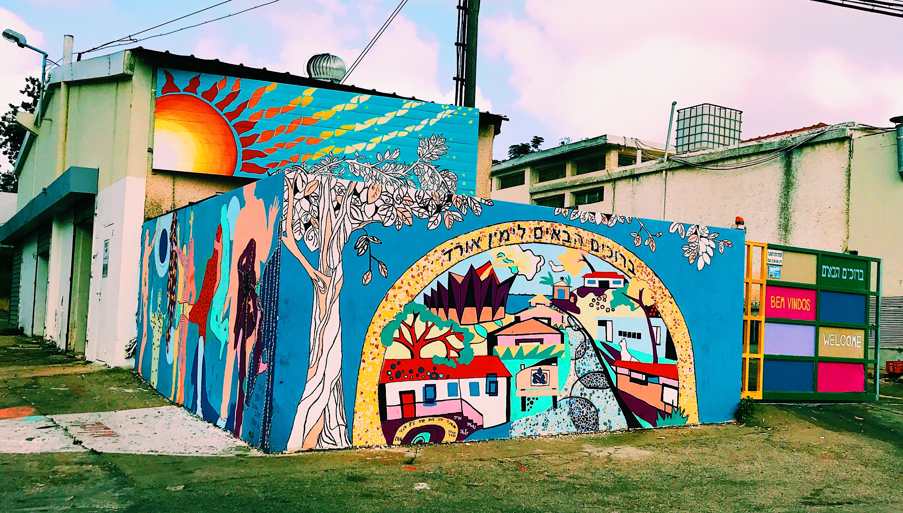
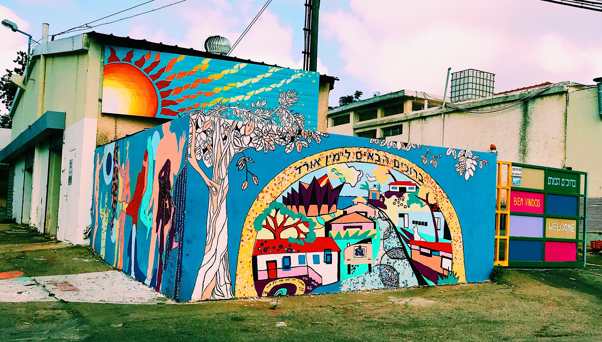
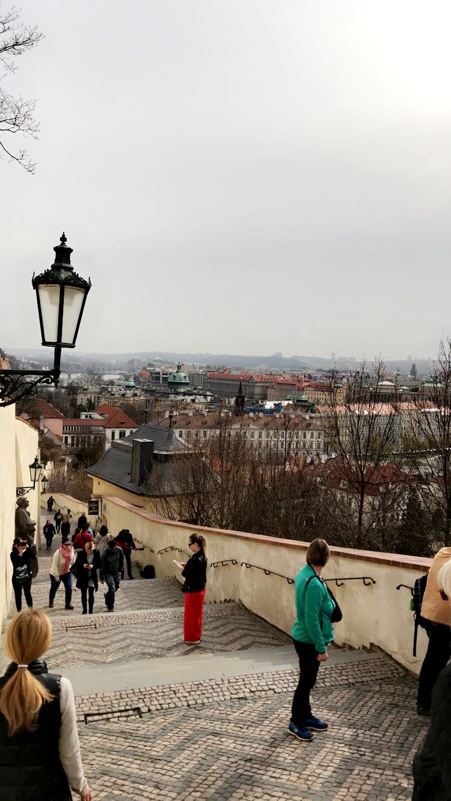
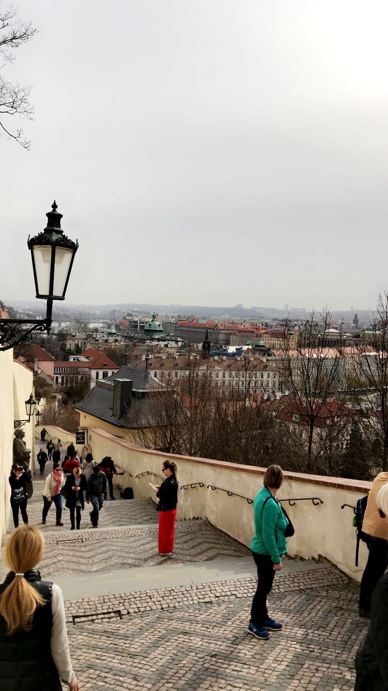

Here I will be sharing stories and information about my trips to Italy, Israel, Slovenia, France, and the Chezch Republic.
Israel
Israel was one of my favorite places I have traveled so far, which is why I will be returning this summer. I was there for three weeks, and I went all around the country. Beginning in Jeruselum, I went to Tel Aviv, Haifa, Eilat, and many more cites. On this trip, I was on my teen tour. Here are my favorite pictures from these places. I am looking forward to my two months this summer in Tel Aviv doing an internship at a startup doing data analytics.
 

Italy
Italy was an amazing experience. On my teen tour, I went to Venice, Verona, Rome, Florence, Milan, Pisa, and Pompeii. Next time I travel back to Italy, I hope to go to the Amalfi Coast and Sicili becasue it seems beautiful there too. All around Italy, the pasta and gelato was superb. I had the best time expoloring with my freinds, learning the culture, and eating amazing food.
Slovenia
Slovenia was a very cool place to visit. I had never even heard of the country before the program told us we were going there. It was a completely different culture than I had ever been to. The water and the mountains were so beautiful. I never would have traveled to this place without my program, and I am very thankful I was able to see the beauty of Slovenia.
Chech Republic and Hungary
I traveled to the Chech Republic and Hungary with my family while my brother was studying abroad there. We went to Budapest and Prague. These eastern European countries were very different than the U.K and anywhere else I had been before. There was similar charm in the streets, but the thick accents and culture created a different energy in the enviornment. Their traditions and practices were very interesting to participate in and watch.

 

France
France was a special place to go to, and I definately seeing myself have a future there. This was a girls trip with my mom and I, and it was my favorite trip I've taken with her. She speaks fluent French and had lived there at different points in her life, so she had been wanting to take me for a while. We spend our time in Paris exploring and eating the best pastries in the world. Many times, I have thought about going abroad to Paris to immersify myself into the amazing European culture it possesses.